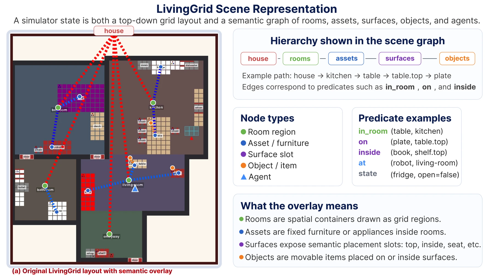
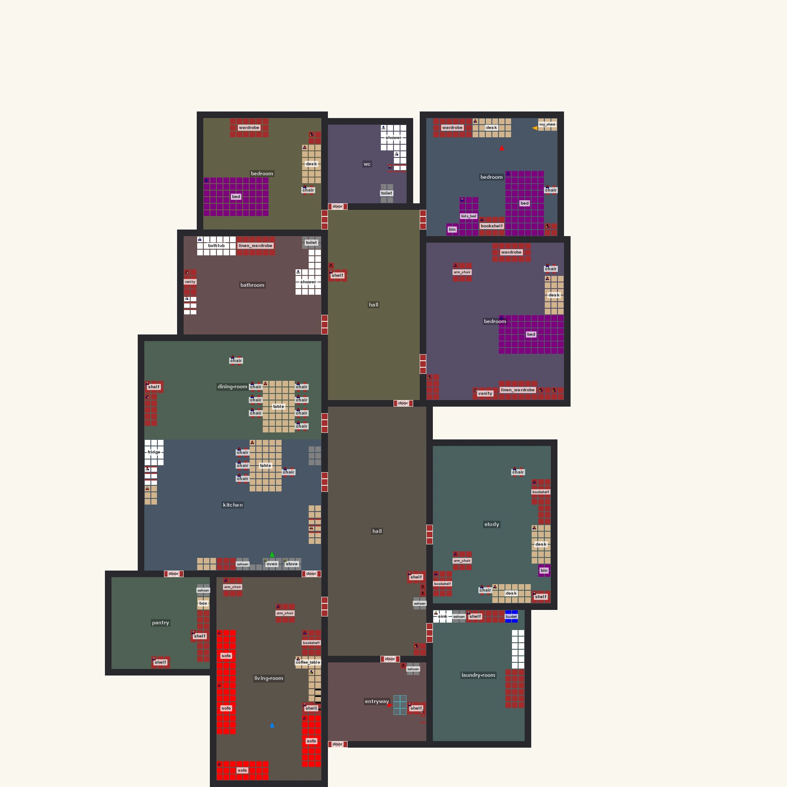
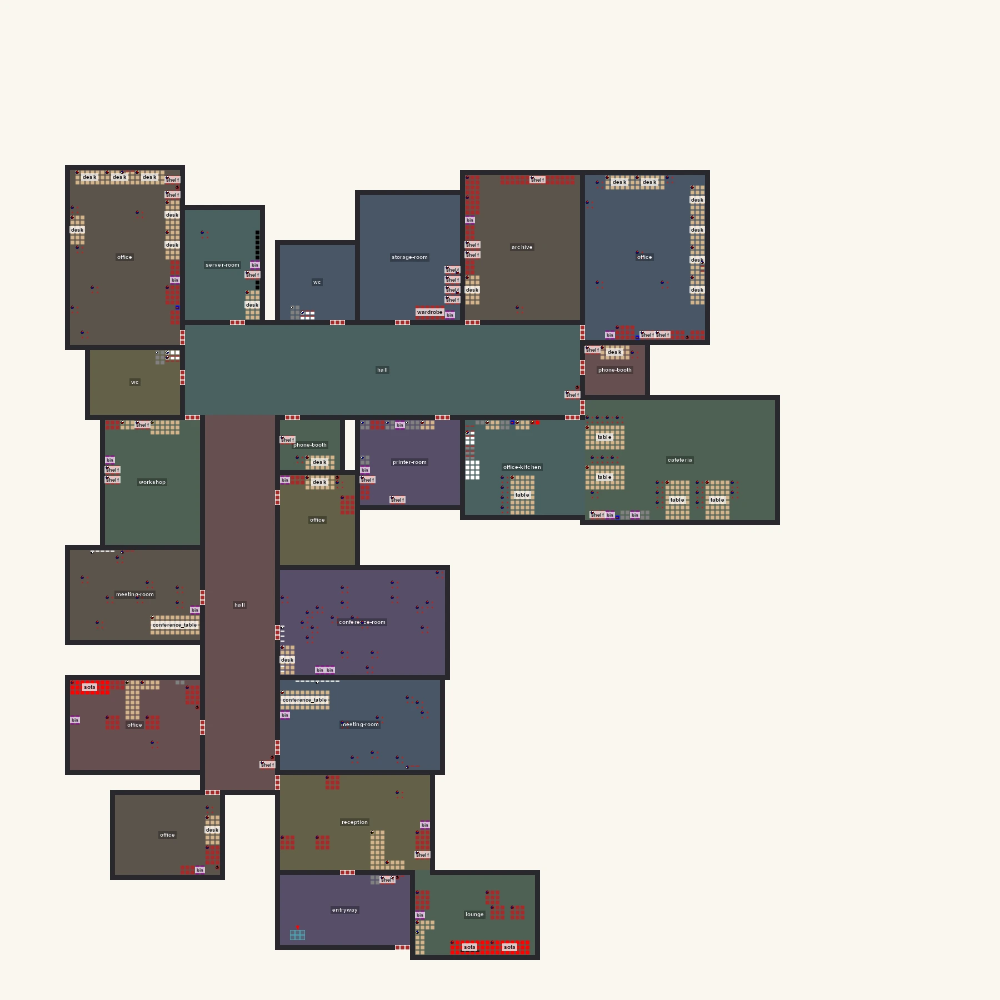
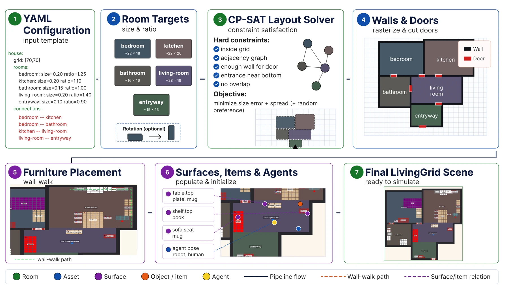

The usual benchmark
state erasedThree tasks.
Three disposable worlds.
Each score is valid, but nothing has to survive the boundary between them.
Persistent-life evaluation for embodied agents
CapabilityBench tests whether an agent can plan, remember, adapt, and act at the right time inside one continuing household world.
LivingGrid keeps the clock moving
Beyond reset-and-score
Most embodied benchmarks isolate one instruction inside a fresh world. That is useful for grounding, but it removes the pressures that appear between tasks.
Here, the same world persists. Residents follow routines. Appliances finish processes. Objects move. Earlier interactions become the context for what happens next.
The usual benchmark
state erasedEach score is valid, but nothing has to survive the boundary between them.
CapabilityBench
state retainedTasks, residents, and autonomous processes share a clock. Earlier actions become later evidence.
One world, many obligations
Choose a moment. The task changes, but the house and its history remain.
08:00
washing dishes
A resident asks the robot to wash the dishes. The world clock continues while the robot acts.
Capability profile, not one score
The paper groups evaluated scenarios by the source of difficulty, so partial success remains interpretable.
Ground and decompose
From atomic manipulation to long-horizon household plans across multiple rooms and object classes.
Retain and retrieve
Carry task-critical information across simulated time gaps and intervening experiences.
Re-ground online
Keep a goal active while people, objects, instructions, or autonomous processes change.
Know when to act
Wait for a time or event, respond inside the right window, and preserve pending work.
LivingGrid
Every state is both a traversable top-down grid and a scene graph of rooms, assets, surfaces, objects, and agents.

Generated, not hand-staged
A seeded pipeline solves room geometry, cuts doors, places furniture, populates surfaces, and initializes agents. The same benchmark can therefore run across layouts without changing its interface.



Reasoning in, action out
The robot receives structured observations and returns grounded JSON actions. Navigation and manipulation primitives work; the benchmark concentrates on the cognitive layer above them.
Read the agent contract{
"time": "08:15:02",
"layout": {
"kitchen": { "type": "kitchen", … }
},
"events": ["oven finished heating"],
"feedback": "action completed"
}
// next grounded decision
{ "action": "pickup", "target": "hot_pizza" }Milestone-based evaluation
Each scenario is decomposed into weighted, latched milestones. Four complementary views expose correctness and practical cost.
Did every capability milestone close?
completionHow much meaningful progress was made?
partial creditHow many proposed actions could the world apply?
groundingWhat did the reasoning loop spend per scenario?
efficiencyBuild, inspect, compare
Citation
@article{capabilitybench2026,
title = {CapabilityBench: A Persistent-Life Benchmark
for Embodied Agent Capabilities},
author = {Anonymous},
year = {2026},
note = {Under review}
}Citation metadata will be updated with the public release.